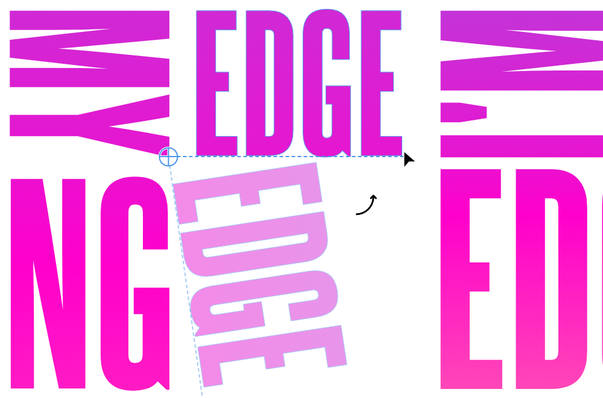

Objects can be flipped, rotated, positioned and sized on the page or with absolute precision using the Transform panel.
The background object has been rotated left, while the foreground object has been flipped horizontally.
You can also transform an object about a point on its own geometry, another object's geometry or a point on the page.

The text object is rotated about its repositioned transform origin using the Point Transform Tool. To flip or rotate objects:
Select one or more objects.
Do one of the following:
On the Toolbar, select a flip or rotate option.
From the Layer menu's Transform sub-menu, select a flip or rotate option.
To position objects accurately:
Select one or more objects.
On the Transform panel, change X and/or Y values.
To nudge objects:
Select one or more objects.
Do one of the following:
For nudging by a single unit of measurement: Press an arrow key.
For 10x the single unit of measurement: Press an arrow key with the pressed.
To size objects accurately:
Select one or more objects.
On the Transform panel, change W and/or H values.
To transform a selected object about a specific point:
With the Point Transform Tool selected, reposition the transform origin to your chosen 'pivot' point on the current or another object's path (or specific node), or even a random point on the page.
(Optional) Reposition the shape so its transform origin snaps onto another object's geometry or node.
Transform the selected shape by dragging from a chosen node.
To transform selected objects separately:
Select multiple objects.
With the Move Tool selected, select Transform Objects Separately from the context toolbar.


 To flip or rotate objects:
To flip or rotate objects: To transform selected objects separately:
To transform selected objects separately: